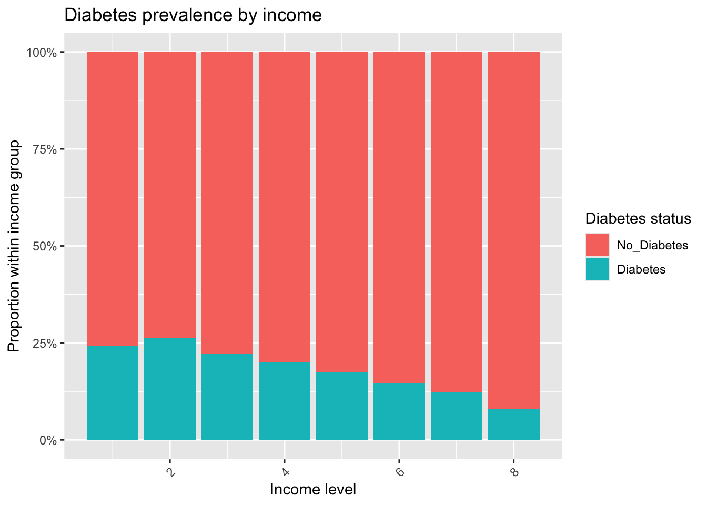
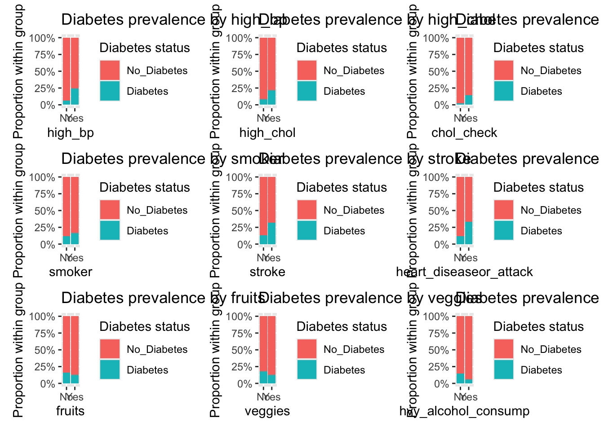

library(tidyverse)
library(janitor)
library(scales)
library(patchwork)Diabetes EDA
Introduction
This project analyzes the Diabetes Health Indicators (BRFSS 2015) dataset, which contains demographic, behavioral, and medical variables related to chronic disease risk. In this EDA, I focus on variables that may help explain or predict diabetes status, including age category, BMI, physical activity, general health ratings, smoking history, and indicators of high blood pressure or high cholesterol.
The purpose of this EDA is to understand the structure of the data, explore important predictors of the Diabetes_binary outcome, and identify relationships and patterns that will guide the modeling process. These insights will guide the modeling process, where the ultimate goal is to build and select an accurate predictive model for classifying whether an individual has diabetes.
Data
Read data + convert to lowercase
data <- read_csv("data/diabetes_binary_health_indicators_BRFSS2015.csv") |>
clean_names()Rows: 253680 Columns: 22
── Column specification ────────────────────────────────────────────────────────
Delimiter: ","
dbl (22): Diabetes_binary, HighBP, HighChol, CholCheck, BMI, Smoker, Stroke,...
ℹ Use `spec()` to retrieve the full column specification for this data.
ℹ Specify the column types or set `show_col_types = FALSE` to quiet this message.#head(data)/
colSums(is.na(data)) diabetes_binary high_bp high_chol
0 0 0
chol_check bmi smoker
0 0 0
stroke heart_diseaseor_attack phys_activity
0 0 0
fruits veggies hvy_alcohol_consump
0 0 0
any_healthcare no_docbc_cost gen_hlth
0 0 0
ment_hlth phys_hlth diff_walk
0 0 0
sex age education
0 0 0
income
0 Convert some variables to factors and give meaningful labels
data <- data |>
mutate(
diabetes_binary = factor(diabetes_binary, levels = c(0, 1),
labels = c("No_Diabetes", "Diabetes")),
high_bp = factor(high_bp, levels = c(0, 1), labels = c("No", "Yes")),
high_chol = factor(high_chol, levels = c(0, 1), labels = c("No", "Yes")),
chol_check = factor(chol_check, level = c(0,1), labels = c("No", "Yes")),
smoker = factor(smoker, levels = c(0, 1), labels = c("No", "Yes")),
stroke = factor(stroke, levels = c(0, 1), labels = c("No", "Yes")),
heart_diseaseor_attack = factor(heart_diseaseor_attack, levels = c(0, 1), labels = c("No", "Yes")),
phys_activity = factor(phys_activity, levels = c(0, 1), labels = c("No", "Yes")),
fruits = factor(fruits, levels = c(0, 1), labels = c("No", "Yes")),
veggies = factor(veggies, levels = c(0, 1), labels = c("No", "Yes")),
hvy_alcohol_consump = factor(hvy_alcohol_consump, levels = c(0, 1), labels = c("No", "Yes")),
any_healthcare = factor(any_healthcare, levels = c(0, 1), labels = c("No", "Yes")),
no_docbc_cost = factor(no_docbc_cost, levels = c(0, 1), labels = c("No", "Yes")),
gen_hlth <- factor(
gen_hlth,
levels = 1:5,
labels = c("Excellent", "Very Good", "Good", "Fair", "Poor")
),
diff_walk = factor(diff_walk, levels = c(0, 1), labels = c("No", "Yes")),
sex = factor(sex, levels = c(0, 1), labels = c("Female", "Male")),
education <- factor(
education,
levels = 1:6,
labels = c(
"K-8",
"Grades 1-8",
"Grades 9-11",
"High School / GED",
"Some College",
"College Graduate"
)
),
income <- factor(
income,
levels = 1:8,
labels = c(
"<10k",
"10-15k",
"15-20k",
"20-25k",
"25-35k",
"35-50k",
"50-75k",
"75k+"
)
),
age = factor(
age,
levels = 1:13,
labels = c(
"18–24", "25–29", "30–34", "35–39",
"40–44", "45–49", "50–54", "55–59",
"60–64", "65–69", "70–74", "75–79",
"80+"
)
)
)Check for Missing Values
data |>
summarise(across(everything(), ~ sum(is.na(.)))) |>
pivot_longer(everything(), names_to = "variable", values_to = "n_missing") |>
arrange(desc(n_missing))# A tibble: 23 × 2
variable n_missing
<chr> <int>
1 diabetes_binary 0
2 high_bp 0
3 high_chol 0
4 chol_check 0
5 bmi 0
6 smoker 0
7 stroke 0
8 heart_diseaseor_attack 0
9 phys_activity 0
10 fruits 0
# ℹ 13 more rowsNull Values do not exist in the data.
Exploring Data using visualizations
data %>%
select(bmi, ment_hlth, phys_hlth) %>%
summary() bmi ment_hlth phys_hlth
Min. :12.00 Min. : 0.000 Min. : 0.000
1st Qu.:24.00 1st Qu.: 0.000 1st Qu.: 0.000
Median :27.00 Median : 0.000 Median : 0.000
Mean :28.38 Mean : 3.185 Mean : 4.242
3rd Qu.:31.00 3rd Qu.: 2.000 3rd Qu.: 3.000
Max. :98.00 Max. :30.000 Max. :30.000 # Histograms
data %>%
select(bmi, ment_hlth, phys_hlth) %>%
pivot_longer(everything(), names_to = "variable", values_to = "value") %>%
ggplot(aes(x = value)) +
geom_histogram(bins = 30) +
facet_wrap(~ variable, scales = "free_x") +
labs(
x = NULL,
y = "Count",
title = "Distributions of numeric health indicators"
)
BMI is right-skewed with most individuals falling between 25 and 35. This suggests obesity may be a relevant predictor for diabetes, which aligns with medical expectations.
Mental health days show a heavy spike at 0 (most people report no poor mental health days) and a smaller spike at 30. This creates a highly skewed distribution, but this variable may still capture stress or chronic mental health conditions that relate to diabetes risk.
Physical health days follow the same pattern as mental health days: most respondents report 0 physically unhealthy days, with another cluster at 30 days. This variable is extremely right-skewed but may help uncover chronic illness patterns contributing to diabetes.
data %>%
group_by(diabetes_binary) %>%
summarise(
mean_bmi = mean(bmi, na.rm = TRUE),
median_bmi = median(bmi, na.rm = TRUE),
sd_bmi = sd(bmi, na.rm = TRUE),
.groups = "drop"
)# A tibble: 2 × 4
diabetes_binary mean_bmi median_bmi sd_bmi
<fct> <dbl> <dbl> <dbl>
1 No_Diabetes 27.8 27 6.29
2 Diabetes 31.9 31 7.36ggplot(data, aes(x = diabetes_binary, y = bmi)) +
geom_boxplot() +
labs(
x = "Diabetes status",
y = "BMI",
title = "BMI distribution by diabetes status"
)
Individuals with diabetes show a higher median BMI and more high-BMI outliers compared to those without diabetes. This indicates that higher BMI is associated with diabetes and will likely be an important predictor in the modeling stage.
Categorical predictors vs Diabetes
data %>%
count(gen_hlth, diabetes_binary) %>%
group_by(gen_hlth) %>%
mutate(prop = n / sum(n)) %>%
ggplot(aes(x = gen_hlth, y = prop, fill = diabetes_binary)) +
geom_col(position = "fill") +
scale_y_continuous(labels = percent) +
labs(
x = "General health",
y = "Proportion within health category",
fill = "Diabetes status",
title = "Proportion with diabetes across general health levels"
)
Diabetes becomes increasingly common as general health worsens. Individuals reporting “Fair” or “Poor” health show a much higher proportion of diabetes compared to those in excellent or very good health, suggesting that overall health status is strongly related to diabetes risk.
Physical Activity vs Diabetes
data %>%
count(phys_activity, diabetes_binary) %>%
group_by(phys_activity) %>%
mutate(prop = n / sum(n)) %>%
ggplot(aes(x = phys_activity, y = prop, fill = diabetes_binary)) +
geom_col(position = "fill") +
scale_y_continuous(labels = percent) +
labs(
x = "Any physical activity in past 30 days?",
y = "Proportion within activity group",
fill = "Diabetes status",
title = "Diabetes prevalence by physical activity"
)
People who report no physical activity have a noticeably higher proportion of diabetes compared to those who were physically active in the past 30 days. This indicates that lack of physical activity is associated with a higher likelihood of diabetes.
Education and Income vs Diabetes
# Education
p_edu <- data %>%
count(education, diabetes_binary) %>%
group_by(education) %>%
mutate(prop = n / sum(n)) %>%
ggplot(aes(x = education, y = prop, fill = diabetes_binary)) +
geom_col(position = "fill") +
scale_y_continuous(labels = percent) +
labs(
x = "Education level",
y = "Proportion within education group",
fill = "Diabetes status",
title = "Diabetes prevalence by education"
) +
theme(axis.text.x = element_text(angle = 45, hjust = 1))
# Income
p_inc <- data %>%
count(income, diabetes_binary) %>%
group_by(income) %>%
mutate(prop = n / sum(n)) %>%
ggplot(aes(x = income, y = prop, fill = diabetes_binary)) +
geom_col(position = "fill") +
scale_y_continuous(labels = percent) +
labs(
x = "Income level",
y = "Proportion within income group",
fill = "Diabetes status",
title = "Diabetes prevalence by income"
) +
theme(axis.text.x = element_text(angle = 45, hjust = 1))
p_edu
p_inc
Diabetes prevalence decreases as education level increases. Individuals with the lowest education levels show the highest proportion of diabetes, while those with college-level education have much lower rates, suggesting education is inversely related to diabetes risk.
Higher income levels are associated with lower diabetes prevalence. The lowest income groups show the highest proportion of diabetes, and the rate steadily declines as income increases, indicating a clear negative relationship between income and diabetes risk.
Checking other Binary Variables
binary_vars <- c(
"high_bp", "high_chol", "chol_check",
"smoker", "stroke", "heart_diseaseor_attack",
"fruits", "veggies", "hvy_alcohol_consump"
)
# Counts and proportions
data %>%
select(all_of(binary_vars)) %>%
summarise(across(everything(), ~ mean(. == "Yes") * 100)) %>%
pivot_longer(everything(),
names_to = "variable",
values_to = "percent_yes")# A tibble: 9 × 2
variable percent_yes
<chr> <dbl>
1 high_bp 42.9
2 high_chol 42.4
3 chol_check 96.3
4 smoker 44.3
5 stroke 4.06
6 heart_diseaseor_attack 9.42
7 fruits 63.4
8 veggies 81.1
9 hvy_alcohol_consump 5.62Several key health risk factors are common in the dataset: about 43% of respondents report high blood pressure and 42% report high cholesterol, both of which are strongly linked to diabetes and are likely to be important predictors. Nearly 96% of individuals have had their cholesterol checked, indicating widespread screening. Smoking is also prevalent at 44%, which may contribute modestly to diabetes risk.
Stroke (4%) and heart disease or heart attack (9%)—are less common but show strong clinical ties to diabetes and could help distinguish higher-risk individuals. Lifestyle behaviors vary across respondents: 63% regularly eat fruits and 81% eat vegetables, while heavy alcohol use is relatively rare (6%). These indicators collectively provide meaningful information about metabolic health and are likely to contribute to the model’s ability to predict diabetes.
Plotting Binary Variables
plot_binary <- function(var) {
ggplot(data, aes_string(x = var, fill = "diabetes_binary")) +
geom_bar(position = "fill") +
scale_y_continuous(labels = scales::percent) +
labs(
x = var,
y = "Proportion within group",
fill = "Diabetes status",
title = paste("Diabetes prevalence by", var)
)
}
p_bp <- plot_binary("high_bp")Warning: `aes_string()` was deprecated in ggplot2 3.0.0.
ℹ Please use tidy evaluation idioms with `aes()`.
ℹ See also `vignette("ggplot2-in-packages")` for more information.p_chol <- plot_binary("high_chol")
p_check <- plot_binary("chol_check")
p_smoke <- plot_binary("smoker")
p_stroke <- plot_binary("stroke")
p_hd <- plot_binary("heart_diseaseor_attack")
p_fruit <- plot_binary("fruits")
p_veg <- plot_binary("veggies")
p_alc <- plot_binary("hvy_alcohol_consump")
(p_bp | p_chol | p_check) /
(p_smoke | p_stroke | p_hd) /
(p_fruit | p_veg | p_alc)
Across all binary health indicators, individuals with various health risk factors consistently show higher rates of diabetes. Diabetes prevalence is substantially higher among those with high blood pressure, high cholesterol, a history of stroke, or heart disease/heart attack, highlighting their strong clinical connection to diabetes. Smoking shows only a slight increase in diabetes prevalence, while dietary indicators (fruit and vegetable consumption) display small differences between groups. Heavy alcohol consumption appears weakly related as well. Overall, the indicators most strongly associated with diabetes are cardiovascular-related conditions, which will likely play an important role in the predictive modeling stage.